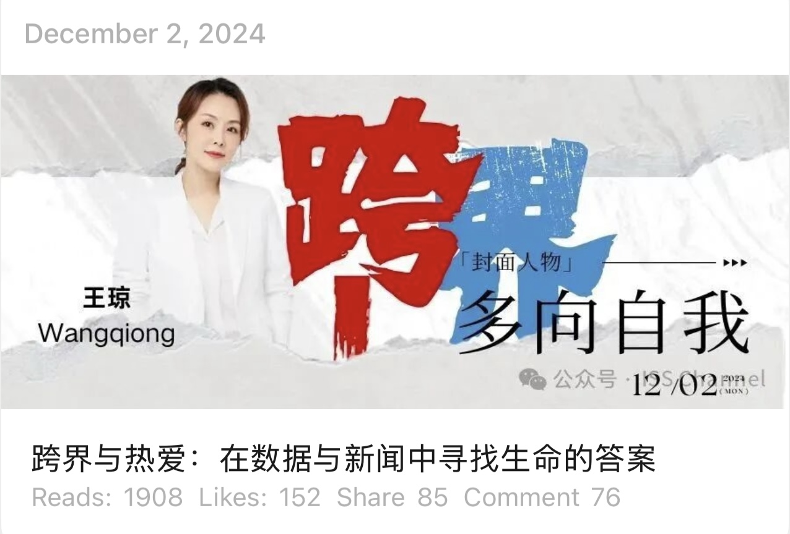
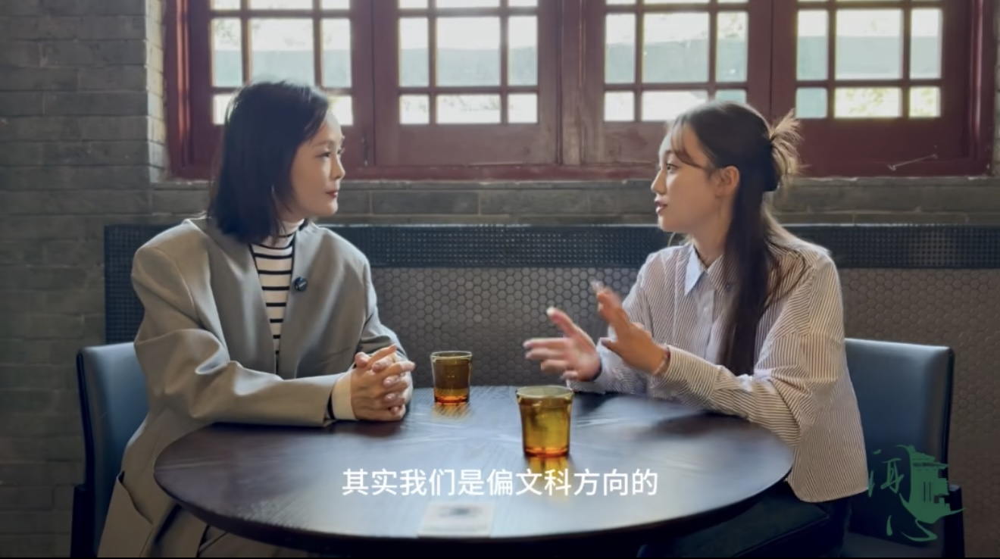
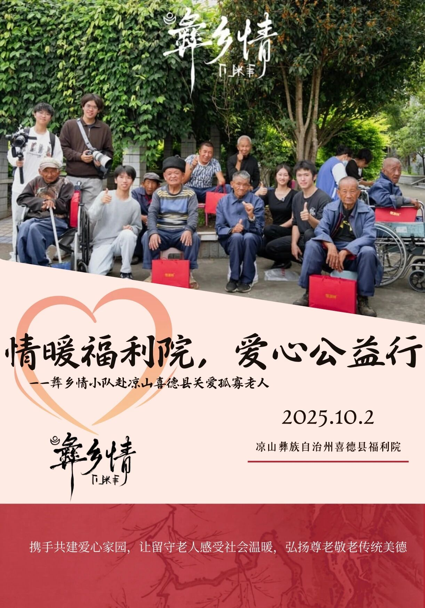
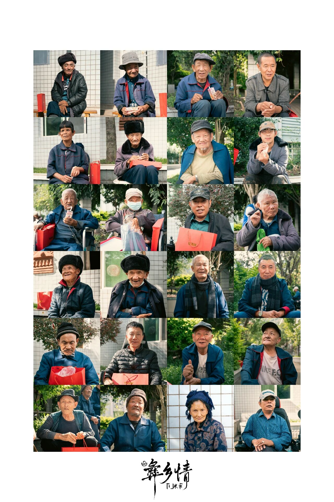
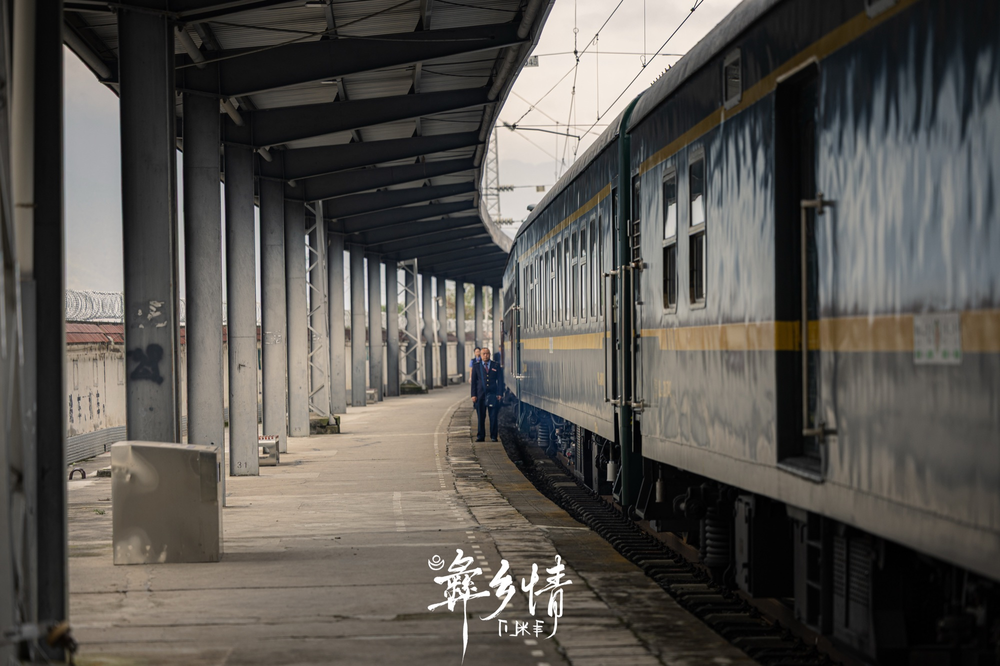
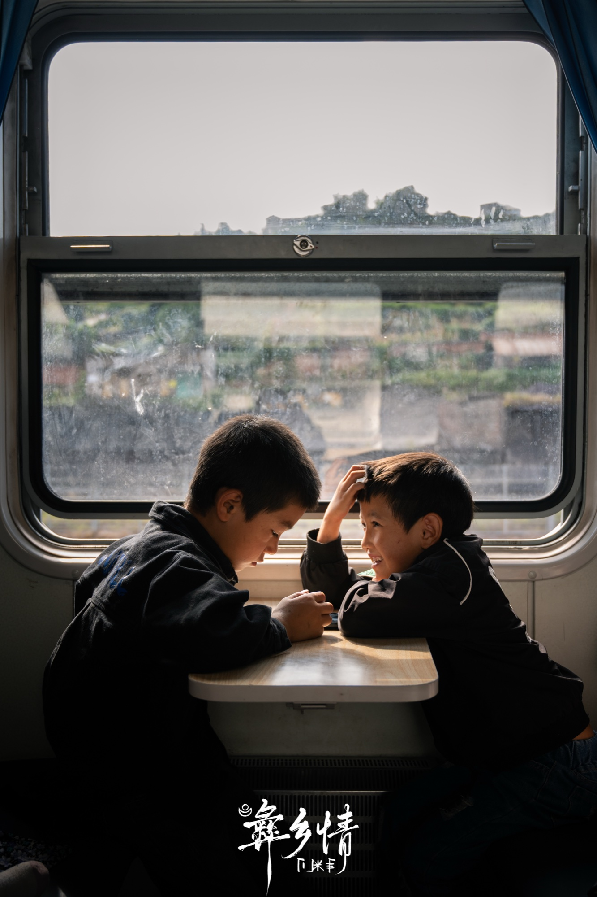

INTERVIEW 01
ISS / SAY WHAT I SEE
✳
00 / ABOUT一个共同记录的现场
公众号
简介
“
这是由我发起并创建，联合武汉大学、中国人民大学、西交利物浦大学、华中师范大学、美国罗德岛设计学院的优秀同学共同运营的公众号。
ISS——“I say what I see.” 我们希望通过我们的声音、文字去真实记录所见，真诚表达所感。
01 / PEOPLE · 人物专访
倾听人物，
也倾听时代。
与真实的人相遇，
让经历和思考被听见。
INTERVIEW 02


02 / COMMUNITY · 公益活动
把关心带到
更远的地方。
“彝乡情”
情暖福利院 · 爱心公益行

WITH CARE,
让爱抵达
让爱抵达
每一个具体的人。
通过线上募捐筹款，我们前往凉山彝族自治州喜德县，为福利院老人送去爱与温暖，并拍摄公益纪录片，记录这次真实的相遇。
01 线上募捐02 走进福利院03 拍摄纪录片
观看公益记录↗

03 / COMMENTARY · 新闻评论
慢一点，
看见镜头之外。
《当慢车遇见快门：
镜头下的凝视与尊严》
一篇关于观看、记录与尊严的新闻评论。
阅读全文↗

与
尊严